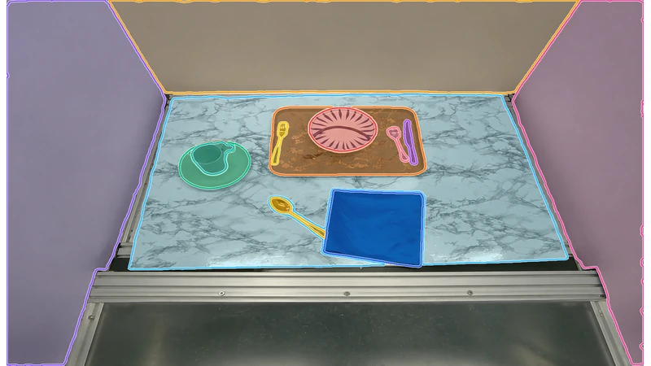
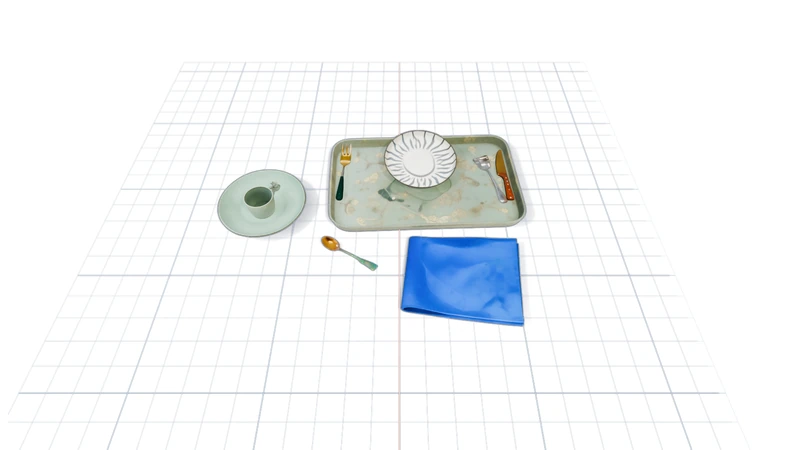
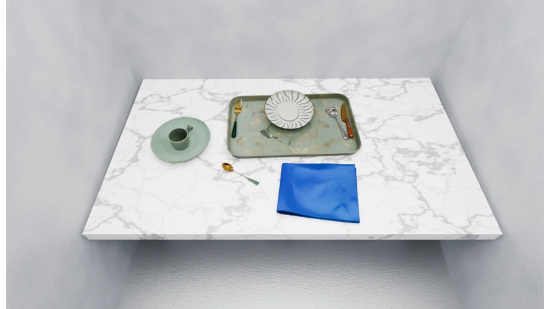
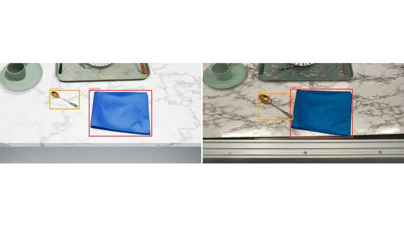

0.878 vs. 0.283
Agreement with ground-truth instance segmentation.
An Agentic System for Single-Image Simulation-Ready 3D Scene Reconstruction
SceneRig reconstructs individual objects and refines their placement using geometric and physical feedback.
01 / Reconstruction
Source-view and nearby-view renders compare object geometry, appearance, and placement across SceneRig and reconstruction baselines.
Loading reconstruction comparisons…
Agreement with ground-truth instance segmentation.
3D position error, including unmatched objects.
Scenes with every object passing the stability test.
SceneRig vs. VIGA, using Claude Opus 5 where applicable. Segmentation and placement: 44 simulator-grounded scenes. Stability: 80 scenes; every object must move less than 50 mm in the simulation test. OSPA uses a 5 cm cutoff. VIGA includes object-grouping instructions.
02 / Robotics
We evaluate whether reconstructed scenes predict real-robot policy outcomes and reproduce recorded manipulations through open-loop trajectory replay.
The same policy runs independently in the real workspace and its reconstruction. We compare outcomes at two levels.
| SceneRig | SimFoundry | |
|---|---|---|
| Episode-level agreementMatching real and simulated success/failure outcomes. | 69% | 54% |
| Task success-rate correlationPearson’s r across 10 policy–task pairs. | 0.92 | 0.84 |
Recorded joint and gripper commands are replayed in simulation without policy queries or trajectory adaptation. We measure task success after replay.
| Task | SceneRig | SimFoundry |
|---|---|---|
| All tasks | 80% |
36% |
| Everything → bin | 3/5 |
0/5 |
| Fruits → plate | 4/5 |
3/5 |
| Fruits → bowl | 4/5 |
2/5 |
| Marker → cup | 4/5 |
0/5 |
| Mustard → bin | 5/5 |
4/5 |
Representative videos illustrate individual episodes; the aggregate scores above include all evaluated episodes. Both methods use the same robot calibration, controllers, and physics. Policy agreement and replay success measure different capabilities.
03 / Method
SceneRig reconstructs individual objects, supporting surfaces, and their spatial relations from a single RGB image. Agents complete the scene geometry, appearance, and lighting in a persistent Blender scene. During object pose refinement, the agent identifies the object and pose component to adjust; the backend searches bounded updates and tests their geometric alignment and physical feasibility.

Identify object instances and supporting surfaces, estimate monocular geometry, and reconstruct individual meshes.

Place objects after their supports and simulate them under gravity to initialize physically plausible poses.

Scoped agents refine surface geometry, appearance, and lighting, with independent visual verification.

Agents diagnose pose errors. A bounded backend searches adjustments and tests them in simulation; complex fixes use direct code edits.
View recorded tool calls04 / Pose refinement
Recorded investigation, pose updates, and backend feedback.
Loading the recorded pose-refinement trace…
USD export. The exported scene includes meshes, textures, lights, cameras, object identities, collision geometry, and physical properties.
.usd